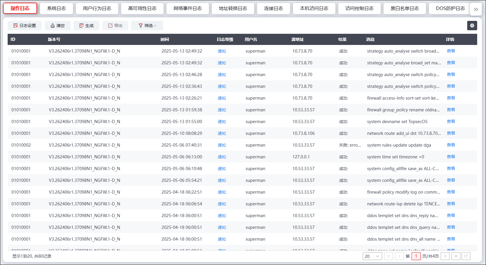
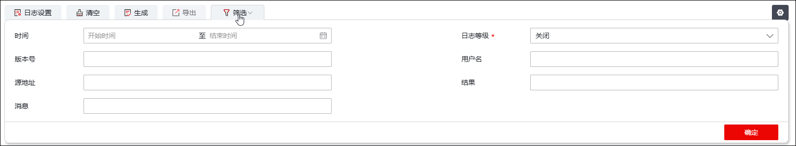
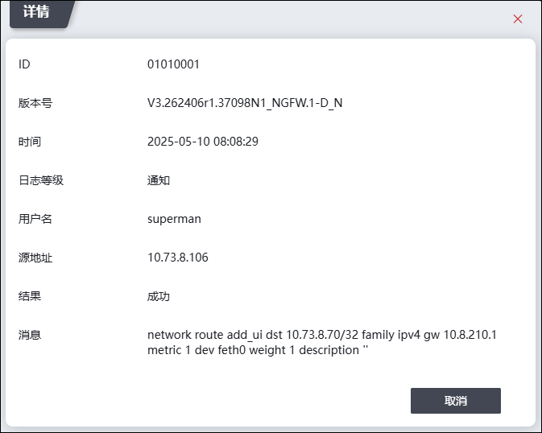
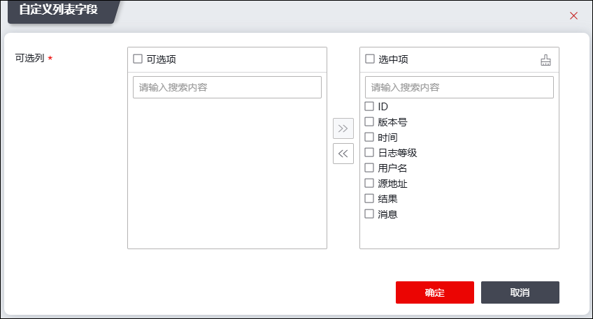
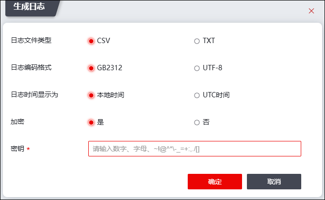
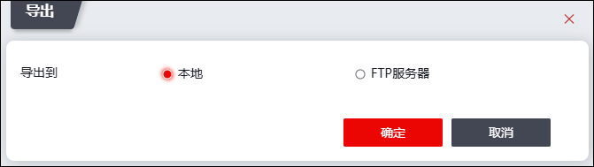

“日志查看”界面展示了防火墙根据进出防火墙流量、自身安全策略以及日志管理模块的配置记录的日志。例如，如果防火墙某安全区域内的某些对象受到了DDoS攻击，防火墙启用了DDoS策略，且日志配置模块配置为记录DDoS攻击日志，则防火墙会记录DDoS攻击的目的IP、防护对象名、攻击状态、攻击类型、防御方法、攻击包数和处理动作等详细信息供管理员进行查看和分析。
NGFW记录的日志类型包括：操作日志、系统日志、网络事件日志、用户行为日志、高可用性日志、地址转换日志、连接日志、本机访问日志、数据库防护日志等等。各类日志的查看方法相同，本节以查看“操作日志”为例，介绍如何查看日志。
|
²NGFW的“日志查看”界面显示相应类型日志的前提条件是：1）日志管理模块开启记录相应日志；2）日志存储到本地硬盘，操作详见 日志设置。 |

| 步骤1 | 选择 ，激活“操作日志”页签，如下图所示。 |

| 步骤2 | 查询日志 |
点击日志列表左上方的“筛选”，展开条件设置区域，如下图所示。

设置统计时段、日志等级、版本号、用户名、源地址、结果和消息等查询参数，点击【确定】按钮将生成查询条件，生成的查询条件会展示于日志列表界面的左上角，与查询条件匹配的日志信息显示在日志查看列表中。
| 步骤3 | 查看日志详情 |
点击日志列表“详情”列的“查看”，可查看日志的详细信息，如下图所示。

NGFW的“日志查看”界面除了支持查看日志外，可设置日志列表可展示的列、下钻到日志记录条件设置页面、生成日志文件、导出日志文件以及清空日志。相关配置如下：
l修改日志列表可展示的列
点击“查看显示列”，弹出如下对话框，“可选项”显示可选的列名称，“选中项”显示日志列表可显示的列，设置选中项后，点击【确定】可修改日志列表可显示的列。

l跳转到日志记录条件设置页面
点击“日志设置”，可进入“日志设置”界面，相关配置说明详见 日志配置。
l生成日志文件和导出日志文件
点击“生成”弹出如下对话框，选择生成日志的日志文件类型（CSV、TXT）、日志编码格式（GB2312、UTF-8）、日志时间显示为（本地时间、UTC时间）、加密（选择“是”后需设置密钥），点击【确定】，NGFW可对当前界面中显示的所有日志打包生成日志文件。

|
²“日志时间显示为”参数可设置为“本地时间”或“UTC时间”，设置为“本地时间”，表示日志生成时间按照NGFW系统时间配置的时区显示；设置为“UTC时间”，表示日志生成时间按照默认“GMT+0”的时区显示。 ²如果上图生成日志文件的“日志时间显示为”参数与“日志服务器配置”章节的“时间设置”参数配置一致，导出的日志文件显示的各日志生成时间与“日志查看”界面显示的日志生成时间一致；否则，不一致。 |
日志文件生成后，点击“导出”，弹出如下图所示对话框，可选择将日志导出到本地或者FTP服务器中。

|
²导出的日志文件是最近一次生成的日志文件。 |
l清空日志
点击“清空”可删除界面中展示的所有日志信息。